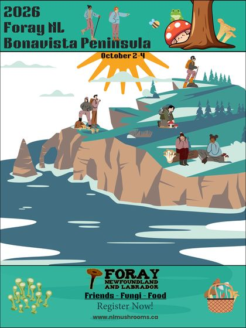
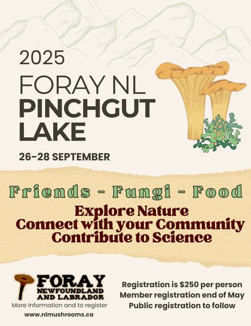
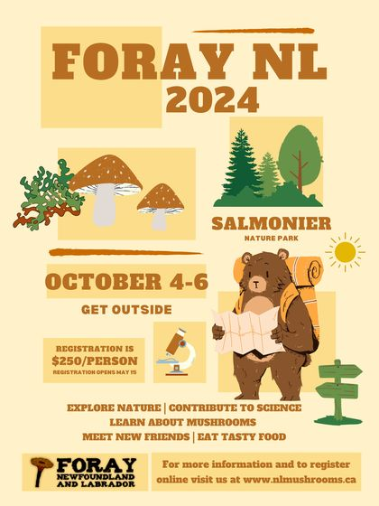
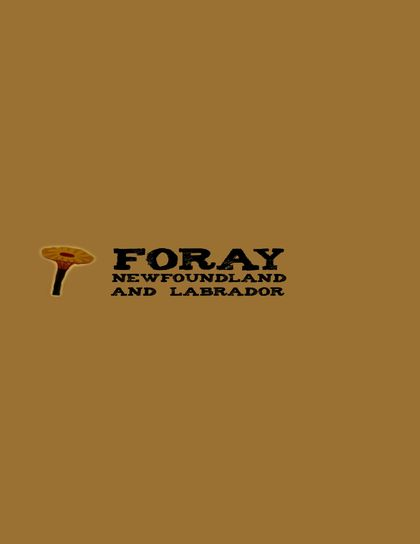
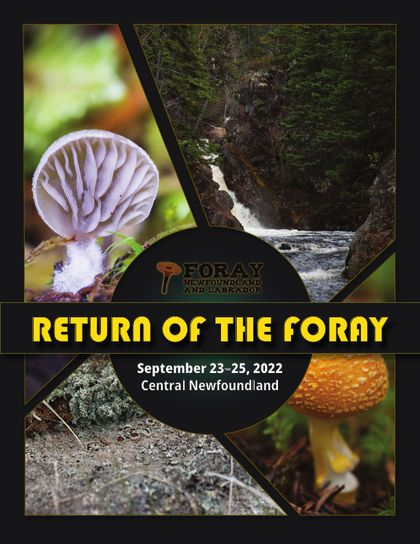
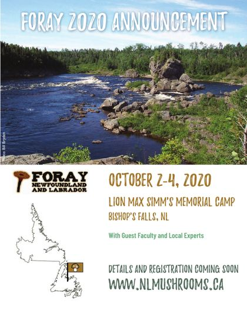

Past Forays
Foray Newfoundland and Labrador has held an annual foray since 2003, each in a different part of the province. Below are all of them, newest first, with the dates, the place and a link to that year's page or foray report where one exists.
Reports for 2003 to the present are collected on the Foray Reports 2003-Present page.
Every foray since 2003
-

Foray 2026
Camp Starrigan, Bonavista Peninsula, near Musgravetown
-

Foray 2025
Pinchgut Lake, Western Newfoundland, south of Corner Brook
-

Foray 2024
Salmonier Nature Park, Avalon Peninsula
-

Foray 2023
Max Simms Lion's Camp, Bishop's Falls, Central Newfoundland
-

Foray 2022
Central Newfoundland
-
Foray 2021
Not held
Not held because of the COVID-19 pandemic.
-

Foray 2020
In-person foray cancelled
Lion Max Simm's Memorial Camp, Bishop's Falls, Central Newfoundland
The online eForay took the place of the in-person foray.
-

-

-

-

-

-

-

-

Foray 2012
Terra Nova Hospitality Home, Terra Nova National Park
-
Foray 2011
Terra Nova National Park
-
Foray 2010
Great Northern Peninsula
-
Foray 2009
Central Newfoundland
-
Foray 2008
Max Simm's Camp, Central Newfoundland
Report not currently online
-

-

-

Foray 2005
Killdevil Lodge, Gros Morne National Park
A second foray followed in the Labrador Straits, September 6-9.
-

-